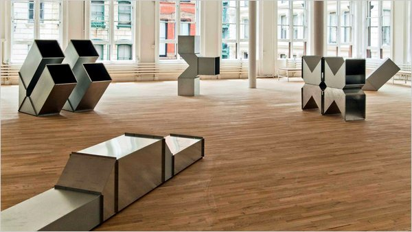

C’est aux Philippines, en 2002, que naît le projet 81 femmes. Sandra part y étudier un semestre dans le cadre de son école de commerce. Yuki est également du voyage. Sur place, elles donnent des cours à des femmes au passé compliqué (prison, prostitution...). Objectif : les aider à construire des projets professionnels.
← PING PRECEDENT
PING SUIVANT →
Art ou design interactifs :
Quelles fonctions et à quelles fins ?
Présentation d’une sélection de projet.
Intro
Liaison avec la discussion sur la participation de la semaine dernière sur les modes de publications. Alain Findeli, spécialiste de la recherche en/par/pour la pratique en art et design. La méthode de recherche en design est-elle applicable au champ de l'art ? EnsAD seul à proposer un versent design. Confronter art/design. C’est une stratégie de dé-fonctionnalisation : le ready made.
Partage d’un contexte, comme la participation et/ou l’interaction, mais pas de la commande (Les Nouveaux Commanditaires comme fondations de France qui a une utilité publique derrière la commande) — qui est de l’ordre du cahier des charge avec son contexte, ses intentions, ses démarches et son client.
Marc Quinn, (son sang sculpté en autoportrait) , les « young british artist » défendus par les Saatchi. Des artistes qui envoient du spectacle. Forme d'efficacité publicitaire.
Damien Hirst
Pour exprimer cette idée de contexte partagée S. Bianchini nous présente un de ses travaux.
Potential flag
Sur un bâtiment est projetée l’image d’un drapeau blanc en image de synthèse. Calculés en temps réel, les mouvements du drapeau répondent précisément au vent capté in situ par le dispositif. Le contexte politique ou l’oeuvre lui donne tout son sens puisqu’elle est exposé en pays dit neutre la Suisse.
All Over, Signes en ASCII Art à partir des flux boursier. Mais, ici, les chiffres et les lettres qui composent ces images sont changeants, dynamiques : ils proviennent en temps réel des flux boursiers mondiaux.
Art = fond/forme
Quelle pertinence des symboles par rapport aux images dans l’art numérique ? Oublie de la relation fond-forme.
Art = fond/forme
design = forme/fonction.
La création numérique opère une relation trial entre forme/fonction/fond. Il y a alors entre art design des porosités et des positions différentes.
Niform, S. BRelation fonctionnelle avec le public. envie de travailler sur la profondeur de champs interactive. La question est de savoir quel fond est pertinent dans cette situation ?
TIM : Mais une autre image n’aurait-elle pas pu exister à la place ?
S.B. : Pour faire oeuvre non. Pour faire dispositif oui. S.B a envisagé cette oeuvre sur le mode d'un brevet. Une démarche de recherche remonté. L’oeuvre a un caractère générique parce que instrumental.
Le dispositif est à la fois un hardware et un software qui offre les condition qui permettent que les choses se fassent et fonctionnent (socle et estrade). Se pause la question de savoir ce qui est montré (le symbolique).
Représentation consécutive à cette polarité (contenant/contenu) entraine une idée de « performation ». Une activité gestuel qui vient instancié le dispositif. Conjonction des dispositifs, du représenté, et des activités du corps = geste d’où émerge représentation, la rencontre. Comment donner lieu à des opération qui donnent lieu à une représentation ?
Les praticables
+Ta garde, 2000 Samuel Bianchini Oeuvre qui met en lien des relations à des relations ou des rapports à des relations. Entretient le même type de relation qu’avec un puzzle parce que relation dans le système. regles = mise en relation dans un système. Mise en abîme de relation. « triangulation ». Oeuvre mise en relation par le spectateur. Combat de boxe à trois. Avec temps resynchro les deux.
+The golden Calf, Jeffrey Shaw, 1994
Meilleure oeuvre.
Juste : Socle, écran. initialement posé. relié par un cable. En regardant dans l'écran un Veau d'or en réalité augmenté.
On retrouve cette relation trial : rapport fort entre le dispositif et ce qu'il représente et les mouvement, gestes qu'effectuent le public.
Une spectatrice va jusqu'à s'agenouiller.
La représentation émerge d’entre les différents composants : le dispositif, la représentation et l’activité public (ou une autre activité par exemple le vent pour potential flag ? ) Relation opératoire et symbolique.
Ce sont des oeuvre qui sortent de l'idée que les choses se passent uniquement dans le média ou a l'écran. Martin le chevalier, excellent artiste mais « pervertit » par le marché de l’art. http://www.martinlechevallier.net/
Temps libre 2004, Samuel Bianchini
Rien a l'écran mais des éléments qui configurent une rencontre comme le mégaphone qui amplifie la voix. C’est l’idée d’affordance c’est à dire : appel des types d'actions mais donne aussi une symbolique ambivalente. Le mégaphone au sens des camps de travail ou au moins de l’idée d'ordre, de commander ou du rapport contestataire.
Formes d'interaction plus ou moins reflexives.
Le design a malgré tout vocation a vectoriser les opérations pour leur donner un ordre du fonctionnel : résoudre un objectif. C’est la Notion d'ustentilité. Forme structurelle de la pensé. Résoudre une tache dans le but offrir un utilité.(démarche de Design classique). Peu présente du coté de l'art.
Le design critique
Mais se met dans la position de défonctionnalisation qui amène les opération sur un autre terrain : la critique. Proximité avec le design d’interaction au RCA. Dune est d'abord un designer d'interaction vectorisé par la fonctionnalité. « goal but task ». Don Normamm fondateur. C’est davantage une démarche artisitique. Il y a production d’opérations mais qui ne sont pas forcément utiles. Il n’y a pas de résolution de problèmes. L’Art est dans la réflexivité et non dans la fonctionnalité. Mais le designer peut introduire de la réflexivité même si c’est rarement intégré. Les designers pensent plutôt en terme d’ergonomie (principes qui optimisent la relation à l'activité : Science du travail, optimisation des activité)
Comment produire des « trucs » qui génère ce genre de questions ? Comment créer de la resistance dans les interfaces et quel est l’intérêt de la réflexivité. Le Critical Design pose ce genre de problèmes mais se coupe du la fonctionnalité des objets qui prête à débat car anticipateur. Mais le design critique finit au musée. Dans son positionnement il déjoue l’endroit où il pourrait être intéressant. Posé des problème tout en créant des solutions. Un étudiant thésard proposait un Friction design…Une tension entre effectivité et reflexion. Comment créer cela sans tomber dans la galerie. Des Stratégies ludiques ? (Jeux vidéo : mourir game over entraîne un effet de reflexivité)
Conseils de lecture
Tisseron: psychanalyse de l'imageIl y a t il un pilote dans l'image Une Pensée original. Conseil de lecture Arrive par le jeux vidéo. Problème des penseurs de l'image double. Il pense à partir du cinéma. model archaïque plus trop opérant. L’autre problème est la pensée française très structuré par la sémiologie. Image comme système symbolique. Alors que Tisseron pense les images comme un espace dans le quel on peut rentrer et sortir.
Winni cot : jeux et réalité. Objets transitionnels. Inspirateur pour les gens de design d'interaction. L'image, de Jacques Aumont. Comme Pierre Scheffer, Polytechniciens qui se déplace vers le domaine de l'art.
Retour sur des exemples d'oeuvres praticables
Franz Erhard Walther, The Forhead.
Il y a un problème des deux côtés. D'un coté le design critique se défonctionnalise au profit de la réflexivité et devient un art qui s'opérationalise à la différence de se fonctionnaliser à la manière des dispositifs.
Art qui s'interroge sur sa fonctionnalisation. Art comme facteur d'activité. Hirschorn, par exemple, agit souvent comme Beuys. Une posture par rapport au language et au design.
Le design se demande comment produire des formes qui ont une ambition fonctionnelle et de résistance, une sorte de tension. LE CROISEMENT EST INTERESSANT.
Aujourd'hui il y a un intéret dans ces croisement là.
retour à Franz Erhard Walther, the forhead 1963
Art avec opérationalité. Il est à la frontière du design vêtement. ( Sa femme confectionne les habits sculptures à revêtir) Les oeuvres ont deux situation :
1 - potentielle : plié, rangé
2 - déployé: activé dans le cadre de performances et deviennent des sculputures.
Mise en tension entre art et design et oeuvres ) activé ou activables. Ou alors design d’expérience/ expérience utilisateur. Il y a conjonction. Mais c’est dur en France, il y’a peu de conjonction entre art et design. Mais fait partie de l’ADN de l’école.
Il faut interroger cette relation entre pratique du publique et forme d'usage et la question du passage usage à la pratiqu. La pratique rejoindrait la figure de l’amateur, auto-construction. Dans l’usage, il y a toujours l’idée du bon usage.
Pour que s'uses les usages ASYMUTES. Ils revendiquent plutôt la pratique. C’est une activité émancipatrice qui renjoint celle amateur. Une pratique d'autoconstruction. S'amplifie d'elle même.
Michel de Certos. Livre Tome 1 L’invention du quotidien.
Fait ce livre à partir d'un commande ministérielle et analyse la façon dont les gens utilisent les objets techniques.
Il analyse des actions qui déjouent les attendus techniques des technocrates et des concepteurs. Systeme tactique comme Tactical media. Pour De Certeau c’est un Media qu'on fait soi meme à l’inverse des mass media et de la synchronisation des consciences. Des médias qui se construisent de façon individuelle.
Propose l’idée d'oeuvre praticable. À la fois opération sans effectivité ou usage mais se pratique. Classiquement l’oeuvre d'art ne doit pas être manipuler.
Comment le monde de l’art se cristallise autour de système qui donne un statut sacralisé. La manipulation change toute la donne.
Dans le cadre de la confrontation entre art plastique et nouveaux media il y’a l’oppositon de deux paradigmes.
Art qui ne savent pas quoi faire de ca et par soucis de conservation se mettent à distance. En opposition avec les nouveau médias qui sont d plus en plus tactiles ou physiques : Wii/Iphone/ 3s/ Kinect
Se ré-opérationaliser est une vrai question.
Comment arriver à résoudre cette equation entre contemplation et usage ? Comment peut ont donner quelque chose à pratiquer et en meme temps à donner a voir ? C’est l’opposition entre participation et contemplation ou passivité contre activité. Mais ces opposition sont réductrices.
Mais contempler en étant hyperactif est possible par exemple la natation.
Ryman, Peintre art minimal. Peinture blanche sur fond blanc matière. affirme sa production comme reflexivité. Il n’y a de sujet dans la matérialité.
Radis designers, reflexivité et fonctionnalité.
Peut-être un bel objectif de design de produire à la fois de la réflexivité et de la fonctionnalité.
Le design graphique est porteur de contenu, donc c’est un peu différent. L’attitude du designer d’affiche est dans un rapport plus idéologique. Il y a un gradation des engagement.
Franz Erhard Walter, Ummantelun, 1964 Faut-il un manuel d’utilisateur pour une œuvre ? L’artiste est obligé d’être là pour donner des consignes ou faire des sortes de démos.
Charlotte Posenenske, 1967
Elle a abandonné l’art pour faire de la sociologie, puisqu’elle pensait que c’était impossible de faire un art politique/social.
Piotr Kowalski, Mesures à Prendre, 1969
Robert Morris, 1971 (praticables)
Krysztof Wodiczko, vehicle in motion, 1972. Interrogative design au MIT.
David Robeky, Very Nervous System (VNS) (1989-2004).
Masaki Fujimata, Beyond Pages, 1995. livre augmenté. Utiliser livre avec objet -> action dans la piece. tres poétique. 1er artiste avec GPS.
Blast Theory , 2001
gens très intéressants, qui travaillent dans la ville à base de géolocalisation, pour mettre en scène le public. Précurseurs des Urban Games.
Riminy protocol, Paris ?? Mettent en scene le public par geoloc.
Croisement techno localisé, théatre, jeux, jeux video en ligne.
Lawrence Malstaf, Shaft, 2002. On rentre dans une tornade. 2004. Le spectateur est un objet d’expérience.
Thomas Hirschhorm, Swiss Swiss
Usman Haque, open burble, 2006 mobilisable.net. Hybride entre architecture, design et art. Invente des objets bizarre. patch Be ? Sorte de soft qui patch des capteurs et effecteurs à distance.
Hehe, nuage Vert (vihrea pilvi, 2008). Du critical design
Hybridation très anglo-saxonne.
Nelly Benayoun
Chaos computer club grosse intéraction de groupe dans l'espace publique.
Cartsen Holler, 2006 toboggan Londres. Des pratiques qui deviennent de l’entertainment, pas si réflexives
Seiko mikami
Diagram 6 importance de la cybernétique en art. Cyber 48, 50 et 60 impact en
Science du contrôle et de l'action des machines et des hommes
Expo des 70's Software
Cybernétique serandipity.
Jack Burnham et ----janne lupton
Influence cybernétique en art et design. Personnes très hybrides.
Dispositif:
opérationnalité et fonctionnalité. Configuration qui conditionne les actions.
A ce propos Deleuze et Agemben. Anne marie Duguet (artiste plus clair)





C’est aux Philippines, en 2002, que naît le projet 81 femmes. Sandra part y étudier un semestre dans le cadre de son école de commerce. Yuki est également du voyage. Sur place, elles donnent des cours à des femmes au passé compliqué (prison, prostitution...). Objectif : les aider à construire des projets professionnels.